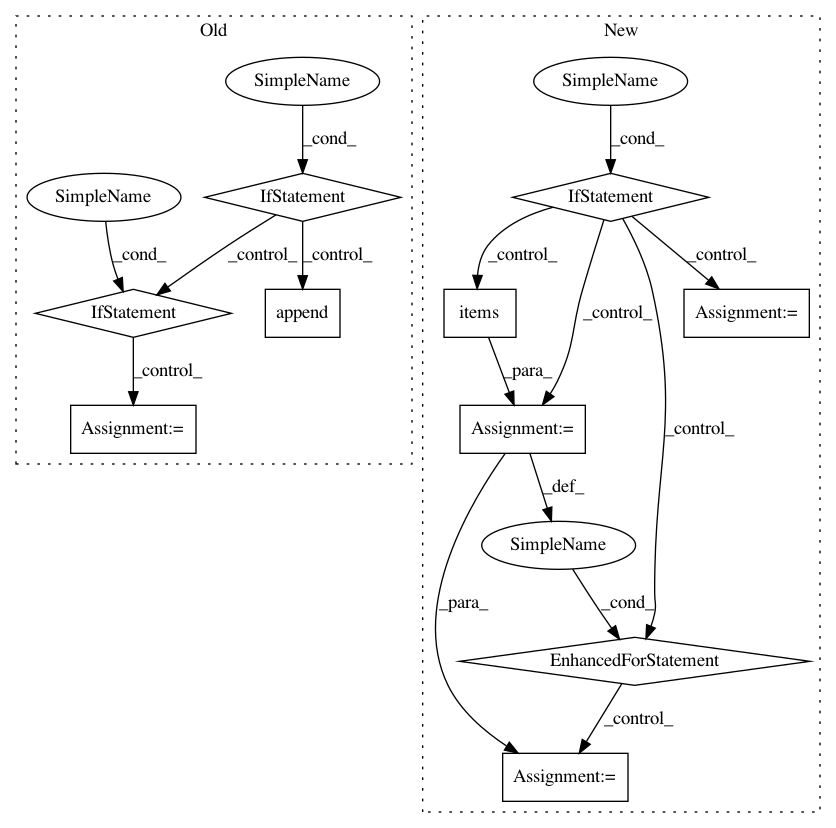

699600d95b2b30291b26b8051cc379c0452e8c25,src/python/twitter/pants/tasks/java_compile.py,JavaCompile,execute_single_compilation,#JavaCompile#Any#Any#,167
Before Change
// TODO: Handle this case better. Separate classes dirs for each partition, like for scala?
artifact_files = [self._classes_dir, depfile]
if processors and not self.dry_run:
// Produce a monolithic apt processor service info file for further compilation rounds
// and the unit test classpath.
processor_info_file = os.path.join(self._classes_dir, _PROCESSOR_INFO_FILE)
if os.path.exists(processor_info_file):
with safe_open(processor_info_file, "r") as f:
for processor in f:
processors.add(processor.strip())
self.write_processor_info(processor_info_file, processors)
artifact_files.append(processor_info_file)
if self._artifact_cache and self.context.options.write_to_artifact_cache:
self.update_artifact_cache(vt, artifact_files)
def create_depfile_path(self, targets):
After Change
all_artifact_files = [depfile]
if self._artifact_cache and self.context.options.write_to_artifact_cache:
deps = Dependencies(self._classes_dir)
deps.load(depfile)
for single_vt in vt.versioned_targets:
per_target_depfile = self.create_depfile_path([single_vt.target])
per_target_artifact_files = [per_target_depfile]
for _, classes_by_source in deps.findclasses([single_vt.target]).items():
for _, classes in classes_by_source.items():
classfile_paths = [os.path.join(self._classes_dir, cls) for cls in classes]
per_target_artifact_files.extend(classfile_paths)
all_artifact_files.extend(classfile_paths)
self.update_artifact_cache(single_vt, per_target_artifact_files)
self.update_artifact_cache(vt, all_artifact_files)
def create_depfile_path(self, targets):
compilation_id = Target.maybe_readable_identify(targets)
return os.path.join(self._depfile_dir, compilation_id) + ".dependencies"
In pattern: SUPERPATTERN
Frequency: 3
Non-data size: 10
Instances
Project Name: pantsbuild/pants
Commit Name: 699600d95b2b30291b26b8051cc379c0452e8c25
Time: 2013-04-09
Author: markcc@foursquare.com
File Name: src/python/twitter/pants/tasks/java_compile.py
Class Name: JavaCompile
Method Name: execute_single_compilation
Project Name: bambinos/bambi
Commit Name: c7adfc8571bb1a761a4a27f9f66fced021103501
Time: 2017-02-22
Author: tyarkoni@gmail.com
File Name: bambi/backends/stan.py
Class Name: StanBackEnd
Method Name: build
Project Name: pantsbuild/pants
Commit Name: 9f236fd5795b60f8f75d77e20189dbeabc123814
Time: 2013-04-04
Author: benjy@foursquare.com
File Name: src/python/twitter/pants/tasks/java_compile.py
Class Name: JavaCompile
Method Name: execute_single_compilation